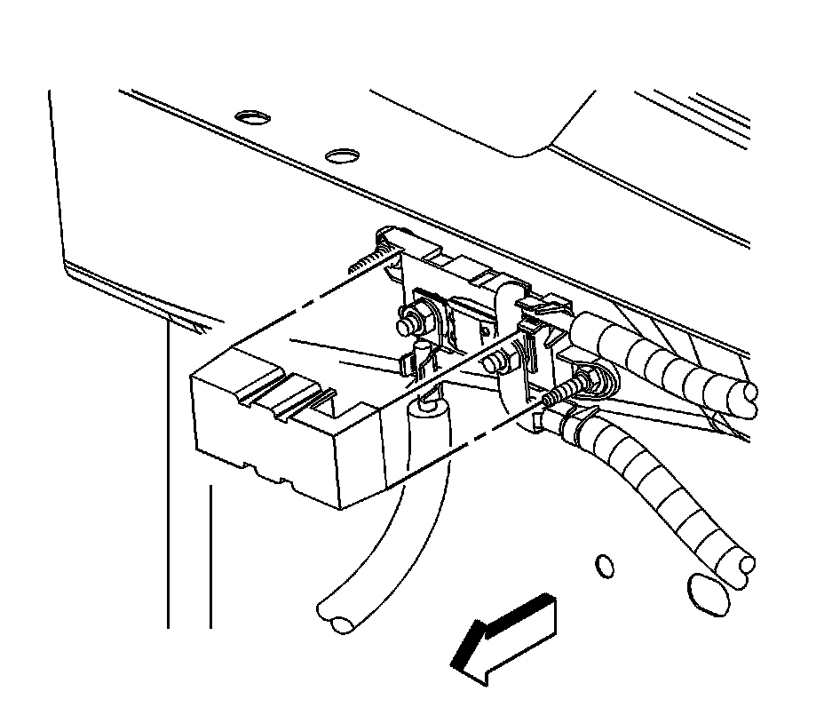

Battery Positive Cable Replacement
BATTERY POSITIVE CABLE REPLACEMENT
REMOVAL PROCEDURE
1. Disconnect the negative battery cable.
2. Remove the under hood junction block cover.
3. Lift the junction block retainers from the locked position (3) and rotate the retainers to the open position (1).
4. Remove the junction block.

5. Remove the positive battery cable connector (1) from the underhood bussed electrical center (UBEC).

6. Remove the mega fuse cover.

7. Remove the generator battery jumper cable to mega fuse nut (3).
8. Remove the generator battery jumper cable terminal (4) from the mega fuse stud.
9. Remove the positive battery cable channel from the studs on the plenum front panel.
10. Remove the positive battery cable clips from the studs on the plenum front panel.
11. Remove the positive battery cable terminal from the mega fuse stud.
12. Remove the positive battery cable channel from the studs.
13. Remove the positive battery cable from the vehicle.
INSTALLATION PROCEDURE
1. Install the positive battery cable to the vehicle.
2. Install the positive battery cable terminal to the mega fuse stud.
3. Install the positive battery cable channel at the plenum front panel.
4. Install the positive battery cable clips to the studs on the plenum front panel.
5. Install the generator battery jumper cable terminal (4) to the mega fuse stud.
6. Install the generator battery jumper cable to mega fuse nut (3).
Tighten the nuts to 9 N.m (80 lb in).
7. Install the mega fuse cover.
8. Install the positive battery cable connector (1) to the UBEC.
9. Ensure the junction block retainers are in the open position (1).
10. Position and align the junction block to the 4 bracket pivots (2), once the pivots are engaged, push the retainer down into the locked position (3).
11. Install the under hood junction block cover.
12. Connect the negative battery cable.